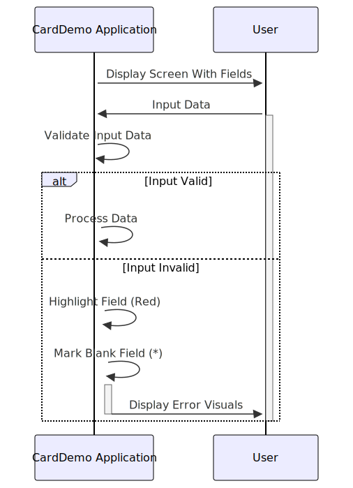

–CONTENT TO TRANSLATE– Gerado em: 1º de outubro de 2024
Título do Documento: Especificação de Validação de Campo CardDemo
Descrição Resumida: Este documento descreve a funcionalidade de um trecho de código dentro do aplicativo CardDemo, com foco em como o sistema fornece feedback visual aos usuários durante a entrada de dados. O código garante a precisão dos dados, destacando possíveis erros e orientando os usuários para o preenchimento de campos obrigatórios.
Histórias do Usuário: Como representante de atendimento ao cliente, preciso que o sistema indique claramente quando cometi um erro ou perdi um campo obrigatório, para que eu possa inserir dados com precisão e evitar que informações incorretas sejam armazenadas no sistema.
Épico Relacionado: 9 - Utilitários do Sistema
Requisitos Técnicos:
CardDemo, verificando especificamente as condições de erro e campos em branco.
(TESTVAR1). Esta variável parece conter um sinalizador ou código de status indicando o resultado de uma validação anterior ou operação de recuperação de dados. Ele também depende de outra variável, provavelmente um sinalizador, chamada CDEMO-PGM-REENTER, para determinar se o usuário está inserindo dados novamente após uma tentativa anterior de correção de erro.(TESTVAR1) indica um erro (FLG-(TESTVAR1)-NOT-OK) ou se o campo está em branco (FLG-(TESTVAR1)-BLANK).CDEMO-PGM-REENTER) para evitar destacar campos desnecessariamente antes que o usuário tenha a chance de corrigi-los.(SCRNVAR2). Ele usa DFHRED, provavelmente uma constante do sistema que representa a cor vermelha, para destacar o campo, sinalizando um erro ao usuário.FLG-(TESTVAR1)-BLANK), ele também marcará o campo com um asterisco (*) dentro do próprio campo ((SCRNVAR2)O OF (MAPNAME3)O).(SCRNVAR2) com base nos resultados da validação.Modelos Relacionados
Configurações:
DFHRED: Constante ou variável do sistema que representa a cor vermelha.(MAPNAME3): Mapa de tela ou definição de layout dentro do aplicativo CardDemo, especificando a organização e aparência dos campos na tela.Melhorias de Código:
Melhorias de Segurança:
Diagrama Conceitual:
–Made by “Smart Engineering” (by Compass.UOL)–